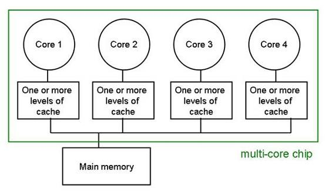

Multicore computing
Even most CPUs these days are multicore, although they usually only have 4-8 cores. This combines the parallel processing of GPUs with the quicker and more instruction rich cores of a CPU to increase the speed at which the CPU can run tasks, as each core can handle an aspect of a task. It can also allow multitasking as each core can function on its own, handling a separate task to the others.
